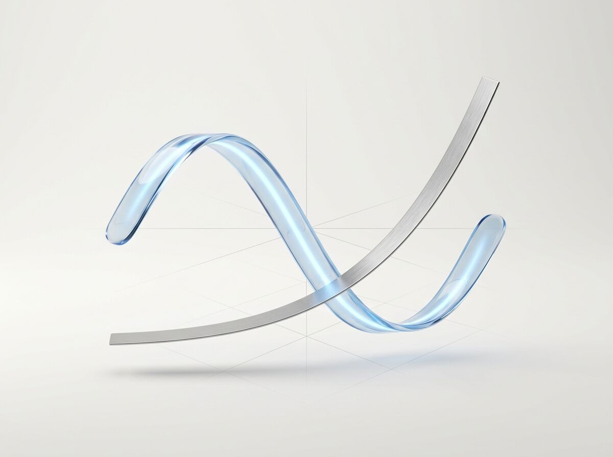
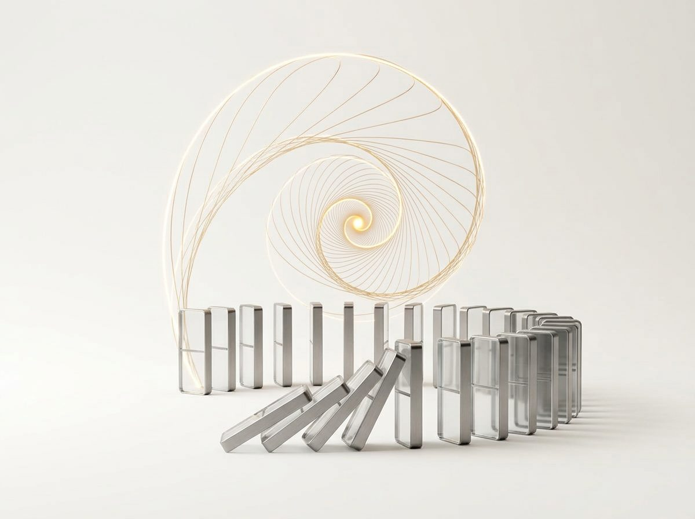
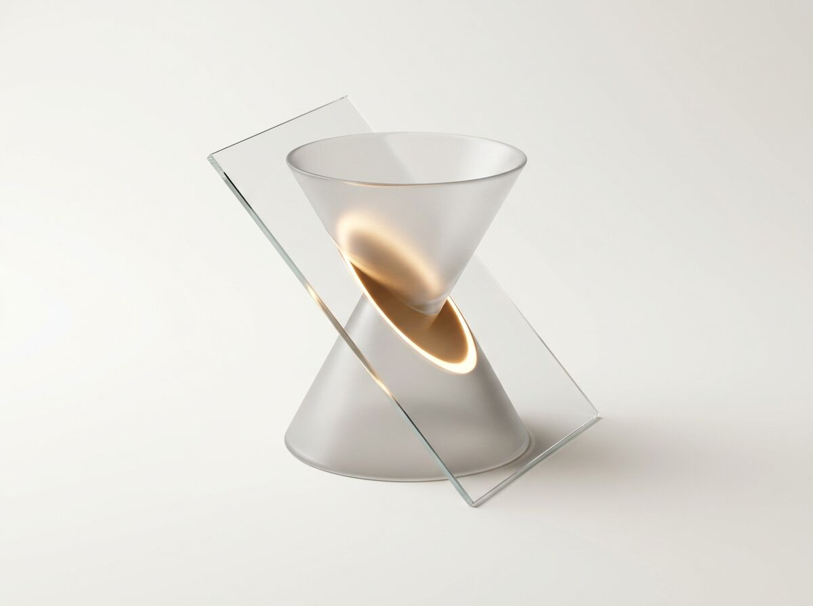
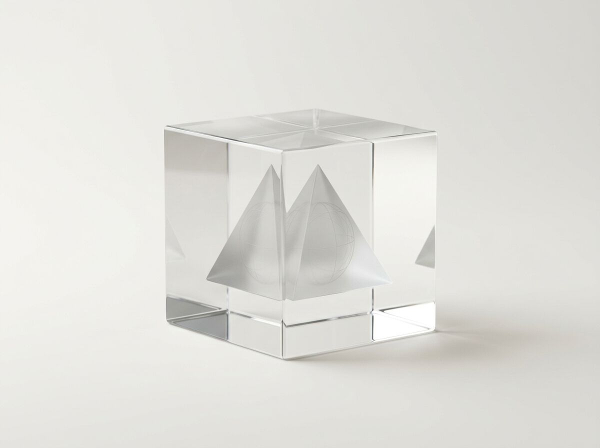
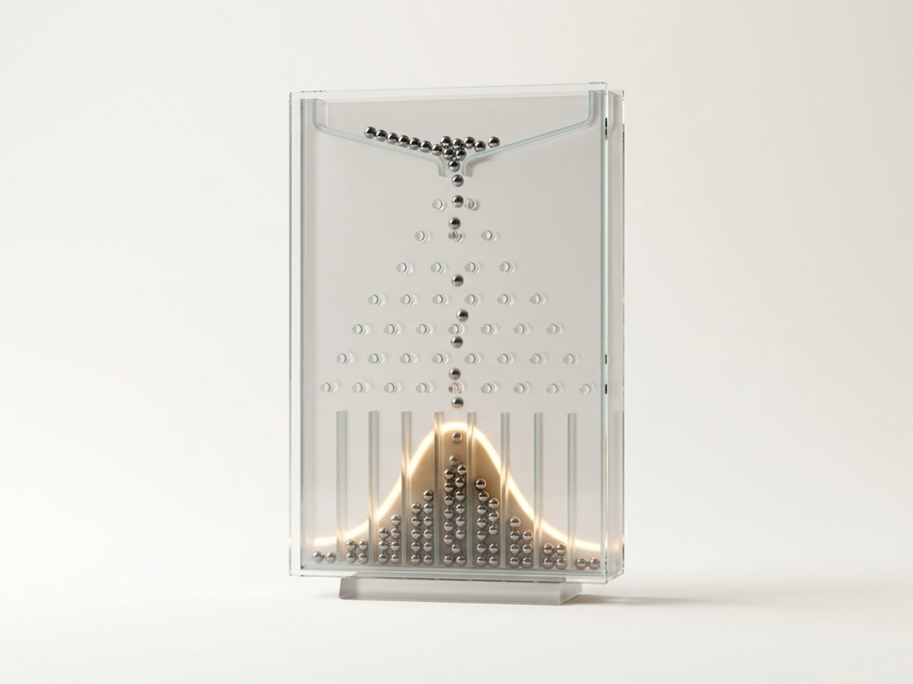

11个实验
116个交互章节
0安装与注册
打开浏览器就能用，手机、平板、电脑都一样。
MATHEMATICS · 人教A版
让抽象，有形状。
参数一动，图像就变。规律不用背，看一遍就记住。

函数图像
8 章平移、伸缩、翻折，一拖就懂。
图像变换 · 指对函数 · 三角函数 · 导数 · 零点 · 定积分
进入实验 ›
数列
11 章一块骨牌推倒下一块，数列就这样走向它的极限。
等差等比 · 蛛网图 · 构造通项 · 裂项相消 · 放缩 · 数学归纳法
进入实验 ›
圆锥曲线
8 章一刀切下去，椭圆、双曲线、抛物线都在这里。
截线 · Dandelin 双球 · 离心率 · 光学性质
进入实验 ›
立体几何
9 章把空间想象力，交给可以旋转的模型。
三视图 · 截面 · 空间角 · 空间向量 · 外接球
进入实验 ›
概率统计
12 章一千个小球落下来，你会亲眼看见正态分布。
条件概率 · 二项分布 · 正态分布 · 线性回归 · 独立性检验
进入实验 ›GEOGRAPHY · 湘教版
地球怎么转，风从哪里来。
把课本里的示意图，放回一个会动的地球。
HISTORY · 统编版
时间，有了地图。
疆域如何伸缩，战局如何翻转。让历史在空间里重演一次。
WHY GEWU
格物，致知。
「格物」出自《大学》：推究事物的道理，才能获得真知。
高考里最难的题，往往不是因为知识点多，而是因为看不见——看不见曲线怎么变、地球怎么转、战线怎么推。格物实验室想做的，就是把这些「看不见」变成「看得见」。
每个实验都按浙江在用的教材编排：数学人教A版、地理湘教版、历史统编版。每章标注教材出处与高考考点，章末配高考题型的随堂检测。
对齐教材
章节顺序跟着课本走，学到哪里，打开哪里。
指向考点
每章标出高频考点，检测题照着高考题型出。
即开即用
不装软件、不注册账号，手机上也能流畅操作。